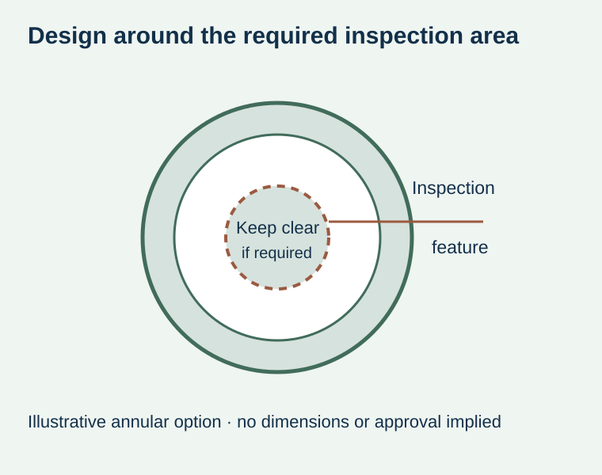
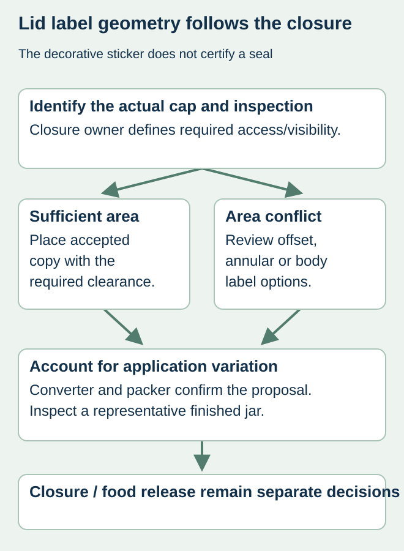

A full-circle sticker makes the top of a preserve jar easy to identify. It can also cover the center feature that the closure supplier or quality team expects to inspect. The decorative layout has then changed access to a functional part of the package.
Obtain the closure owner’s inspection and clearance requirements before approving a lid-top label. Identify what must remain visible or accessible and choose a supported label position or cut shape around that requirement. An ordinary sticker is neither proof of vacuum nor an approved substitute for the closure’s own indication.


Start with the actual closure, not the jar volume
Silgan’s steel closure button guidelines explain that button performance depends on the closure and relevant vacuum/process conditions, with product-specific limitations. That supports involving the closure and processing owners. It does not establish a universal button design, vacuum requirement or food-release rule for this article’s hypothetical jar.
Ask for the actual cap reference and the inspection method used by the responsible operation. A lid-top photo can help the discussion but may not show tolerances, button travel or the area an inspector needs to observe. Keep unknown information open instead of drawing a keep-clear circle from a stock image.
Give the designer an exclusion map
| Input | Responsible confirmation | Label decision |
|---|---|---|
| Closure identity | Actual model, supplier and relevant drawing | Do not reuse another lid’s template |
| Inspection feature | What must be seen or accessed and when | Mark the required keep-clear area |
| Placement variation | Label and application tolerances for the proposal | Design must preserve the required clearance |
| Information | Approved flavor/date/other content location | Move copy if clearance reduces available area |
| Evidence | Representative finished jar and review scope | Check appearance and access together |


Compare placement options with the responsible owners
Depending on the actual closure and supplier capability, proposals might include a smaller offset sticker, a defined annular shape or moving more information to the jar body. These are alternatives for review, not pre-approved solutions. The converter must confirm the supported geometry and the packer must confirm its placement control.
A nominal hole in an annular sticker is insufficient if application variation could move its edge over the required inspection area. Use the actual clearance and tolerance inputs. No standard opening diameter or placement allowance is supplied here; the required relationship belongs to the actual cap, label and application method.
Keep inspection, tamper indication and decoration distinct
The lid/body guide decides where information is useful. The seal-label guide addresses a separate bridge across an opening. A vacuum button, decorative lid sticker and first-opening feature should not be presented as interchangeable evidence. Their respective owners must confirm the intended function.
For a hypothetical jam launch, moving a flavor cue off the cap center might preserve inspection access but change the packer’s top-view recognition. Show that tradeoff to production and design together. Do not solve the visual problem by obscuring a required inspection area or by changing the closure process without its owner.
Approve the representative finished jar
Review the label on the actual closed pack under the agreed inspection arrangement. Record the closure, cut and application references that the sample represents. A paper outline can explore placement but cannot establish closure function, process adequacy or food safety.
Recheck the geometry when the cap supply, label shape or applicator changes. The practical result is an identified label that preserves the required inspection access, with the closure and food-release decisions remaining with the responsible qualified parties.
Discuss the unresolved label requirement
Send the actual jar and closure reference, top-view drawing or photos, closure-owner inspection requirements and intended label placement. Ask for a label geometry review without treating it as approval of the closure process. Prepare a label specification inquiry. The contact page opens an email draft and lists email or WhatsApp for attachments. Supply, proof options, testing, pricing and timing require project confirmation.